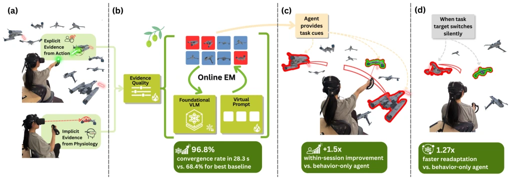
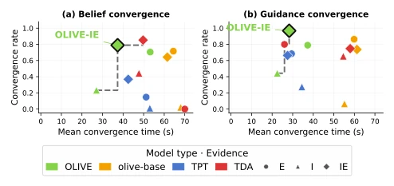
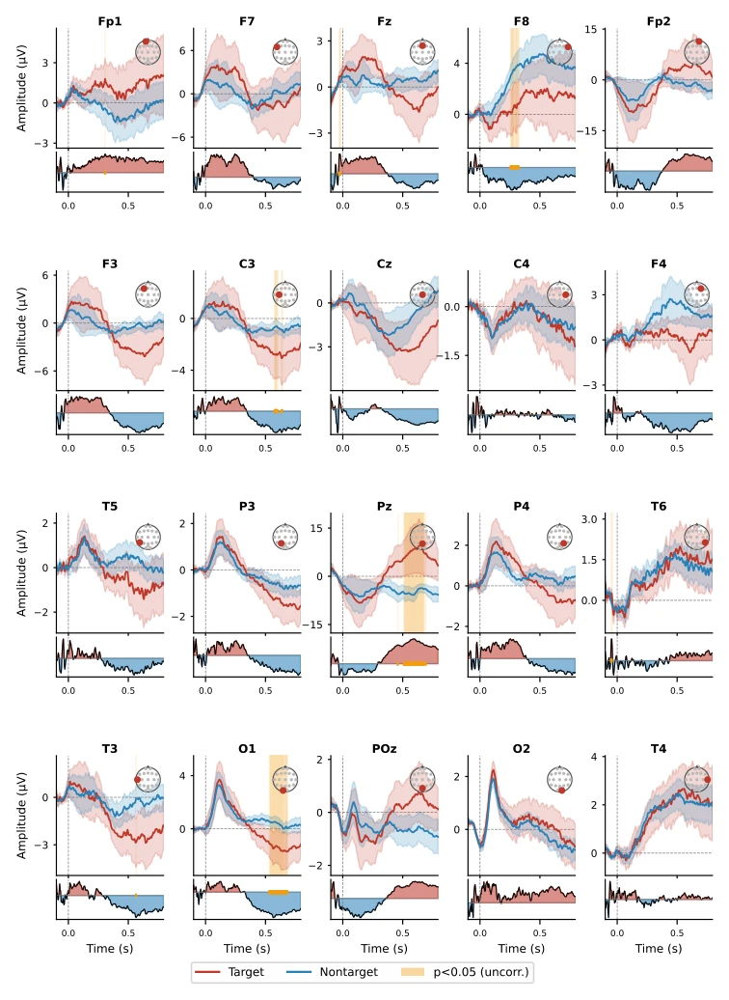
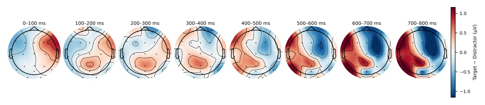
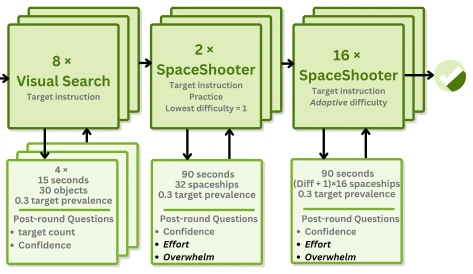
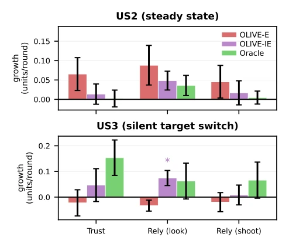
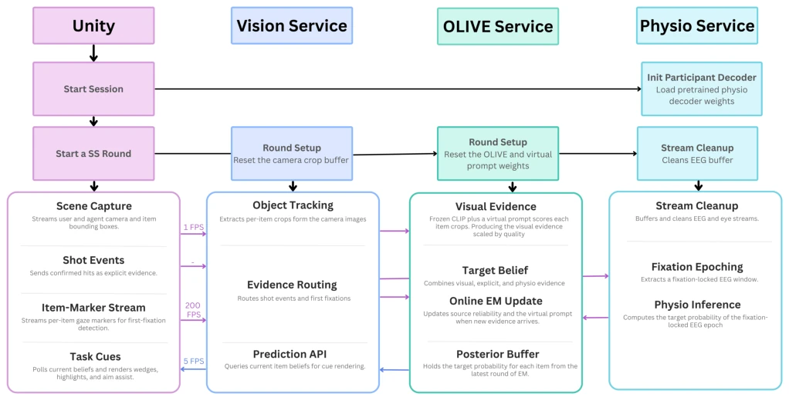
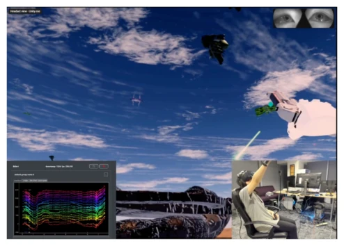
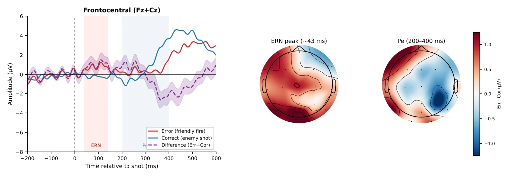
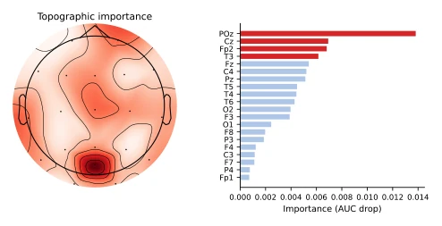

Augmenting Human Performance with an XR Agent Learning from Online Behavior and BCI Evidence
Ziheng Li, Xichen He, Haoyan Chen, Charlie Zou, Sheng Bai, Benjamin Yang abspdf
论文点评Review
这篇论文试图用脑电波（EEG）给 VR 射击游戏加个“外挂”，名为 OLIVE。作者声称能融合行为与生理信号在线微调冻结的 VLM，听起来像是给 AI 装了个“读心术”。但说实话，在动态 VR 场景里用 EEG 做实时反馈，运动伪影和噪声简直是噩梦，作者虽然用了 EM 算法来估计可靠性，但这本质上还是概率博弈。不过，在目标突然切换的“静默适应”任务上，它确实比纯行为模型快，这点值得点赞。至于“增强人类表现”，更多是统计上的提升，离真正的“人机共生”还有距离。最大的槽点可能是：戴着 EEG 头盔打 VR，舒适度与数据质量的平衡真的做好了吗？而且冻结 VLM 仅调 prompt 真的能跟上任务定义的变化吗？
This paper attempts to add a "cheat" to VR shooting games using electroencephalography (EEG), named OLIVE. The authors claim to be able to online fine-tune frozen VLMs by fusing behavioral and physiological signals, which sounds like equipping AI with a "mind-reading" ability. But to be honest, using EEG for real-time feedback in dynamic VR scenarios, motion artifacts and noise are simply a nightmare, although the authors used the EM algorithm to estimate reliability, this is essentially a probabilistic gamble. However, on the "silent adaptation" task where targets switch suddenly, it is indeed faster than pure behavioral models, which is worth praising. As for "enhancing human performance", it is more of a statistical improvement, still far from true "human-machine symbiosis". The biggest criticism might be: wearing an EEG headset to play VR, was the balance between comfort and data quality really done well? And can freezing the VLM and only tuning the prompt really keep up with changes in task definitions?
In modern work, attention is the bottleneck rather than computing power [53, 84]. Traditional automation is either static or prone to inducing over-reliance [45, 69]. Existing BCIs are mostly used as auxiliary rather than enhancement tools [24, 89]. Test-time adaptation assumes unlabelled visual streams, ignoring human evidence [18, 39, 71]. Crowd-learning cannot handle online VLM updates [9, 64]. RL sample efficiency is too low [38, 59]. OLIVE aims to solve the problem of online adaptation of heterogeneous human evidence, filling the gap from passive BCI to active performance enhancement, especially in Operational Vigilance (OV) tasks, where the system needs to learn in real-time what the user currently considers relevant, without manual labels.

Figure 1: OLIVE deployed in SpaceShooter, an XR target-identification game. (a) Two evidence streams (explicit: targets shot down; implicit: fixation-locked EEG) feed into an online expectation–maximization (EM) loop. (b) The EM update adapts a virtual prompt atop a frozen vision–language model (VLM), weighting each channel by estimated reliability. (c) Live deployment: OLIVE renders directional line cues toward high-belief targets outside the user’s field of view. (d) Silent target switch: OLIVE-IE guidance reconverges faster than the behavior-only agent, reducing the window of misaligned support.
The core is the OLIVE framework, based on an EM loop for online updates. The pipeline is divided into three streams: visual, behavioral, and physiological. The visual end uses a frozen VLM (CLIP) to extract features, only fine-tuning virtual prompts [62]. The behavioral end records shooting events, treated as sparse explicit signals. The physiological end uses fixation-locked EEG to decode target probabilities [12, 13]. The E-step calculates the log-odds posterior of items being targets, accumulates evidence from three streams, and adds popularity anchoring to prevent collapse. The M-step is divided into two steps: Step A updates source reliability parameters (e.g., shooting accuracy alpha/beta, EEG discriminability nu), preventing polarity reversal through projection; Step B updates the VLM prompt to minimize cross-entropy. In terms of system architecture, Unity streams data to the Python service via gRPC, ensuring frame-level inference [47]. This parameterized design allows the system to defaultly assume imperfect evidence, dynamically weighting rather than hard-coding, ensuring robustness.

Figure 4: OLIVE-IE occupies the upper-right corner of the convergence rate × speed space for both belief and guidance convergence (𝑁= 57; 5 seeds). No other variant or baseline simultaneously matches its rate and speed. Best viewed in color.

Figure 9: Grand-average FRPs for target and non-target items across all 20 EEG channels in topomap layout (𝑁= 57 participants; shading = ±1 SEM; orange shading = 𝑝< .05 uncorrected Welch’s 𝑡-test; bottom strip = Cohen’s𝑑). The posterior P300 (300–600 ms) is the primary discriminative component exploited by the physio decoder.

Figure 10: Grand-average target–distractor ERP difference topomaps from the US1 Visual-Search calibration phase (𝑁= 41 participants; 2,060 target and 3,946 distractor fixation epochs after preprocessing: amplitude rejection > 100 𝜇V per channel, per-participant FastICA with Fp1/Fp2 ocular proxies; baseline [−100, 0] ms). Each panel shows the scalp distribution of the grand- average amplitude difference (target −distractor, 𝜇V) averaged within the indicated 100 ms window. The posterior positivity emerging at 300–600 ms (Pz, POz) is consistent with the P300 orienting response, validating that the decoder captures genuine neural evidence of target detection. The lateralization likely reflects participants aiming with the right hand immediately after fixation.
Three user studies. US1 offline simulation measures convergence (N=57), US2 real-time deployment measures throughput (N=46), US3 measures target switching adaptation. Baselines include olive-base, TPT, TDA. Metrics are convergence rate, speed, kills/s. Results show OLIVE-IE (behavioral+EEG) is Pareto optimal in convergence rate and speed. US2 shows significant throughput improvement for the IE group (+0.031 kills/s, p=.003), and is independent of skill. In US3, after target switching, the IE group reconverges 1.27 times faster (p=.008). Ablation shows EEG is downweighted when low quality, proving reliability estimation is effective. User trust monotonically increases as sessions progress, indicating the system established an effective human-machine collaboration relationship.

Figure 3: US1 session structure. Visual Search calibration, two practice rounds, then 16 scored SpaceShooter rounds (90 s each); 18 rounds total.

Figure 6: Within-session reliance growth by condition: per- participant slope of each post-round rating (Trust, Rely-look, Rely-shoot) regressed on round index, averaged per condition (mean ± SE; ∗𝑝< .05, one-sample 𝑡-test of slope ≠0). Positive values indicate operators relied on the agent more as the session progressed.

Figure 8: Runtime system architecture. Unity communicates with the Vision Service via gRPC. The Vision Service acts as a bridge, routing visual crops and shot events to the OLIVE Service and forwarding fixation events to the Physio Service. Initialization calls (dashed) set up per-participant state before each round.
其他图片Other Figures

Figure 7: Annotated screenshot from a live SpaceShooter session. Main area: first-person XR view through the VR headset; the participant’s virtual hand and controller are visible on the right alongside enemy ships. Top right: eye- tracking camera feeds, used to detect fixation onsets and align EEG epochs to specific on-screen items. Bottom left: real-time EEG monitor displaying raw traces from all 20 electrodes, confirming continuous recording. Bottom right: participant wearing EEG headset and VR headset.

Figure 11: Error-Related Negativity (ERN) from SpaceShooter friendly-fire events. Left: Grand-average frontocentral waveforms (Fz+Cz) for error (red) and correct (blue) trials; dashed purple = difference wave (Err−Cor), shading = ±1 SEM across participants. Center/right: Scalp topomaps of the error−correct difference at the ERN peak and Pe window. (𝑁= 38 participants; preprocessing: 0.5–30 Hz continuous bandpass, [−200, 0] ms baseline, amplitude rejection > 150 𝜇V, FastICA; 𝑝= .096, one-sample 𝑡-test on frontocentral ERN amplitude.)

Figure 12: Group-average EEG channel importance from permutation ablation (𝑁=41 participants; 459 ± 174 fixation epochs per participant, val-set runs 33–50). Left: topographic importance map. Right: channels ranked by mean AUC drop when zeroed; top-4 (POz, Cz, Fp2, T3) are highlighted in red. Drops are modest due to the joint multi-channel tokenizer architecture.